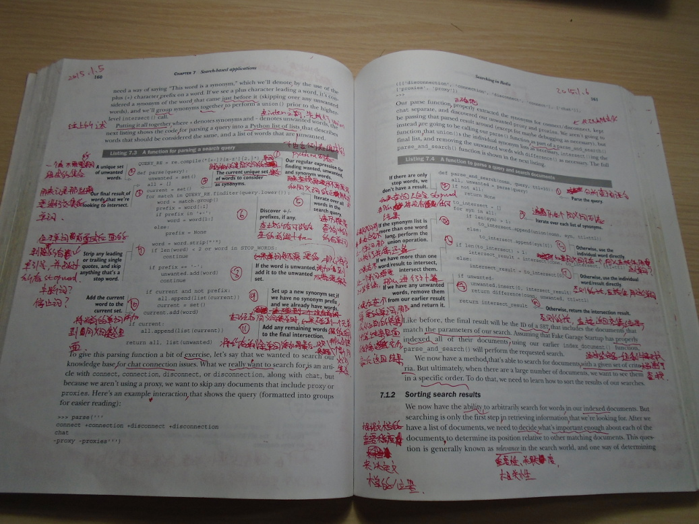
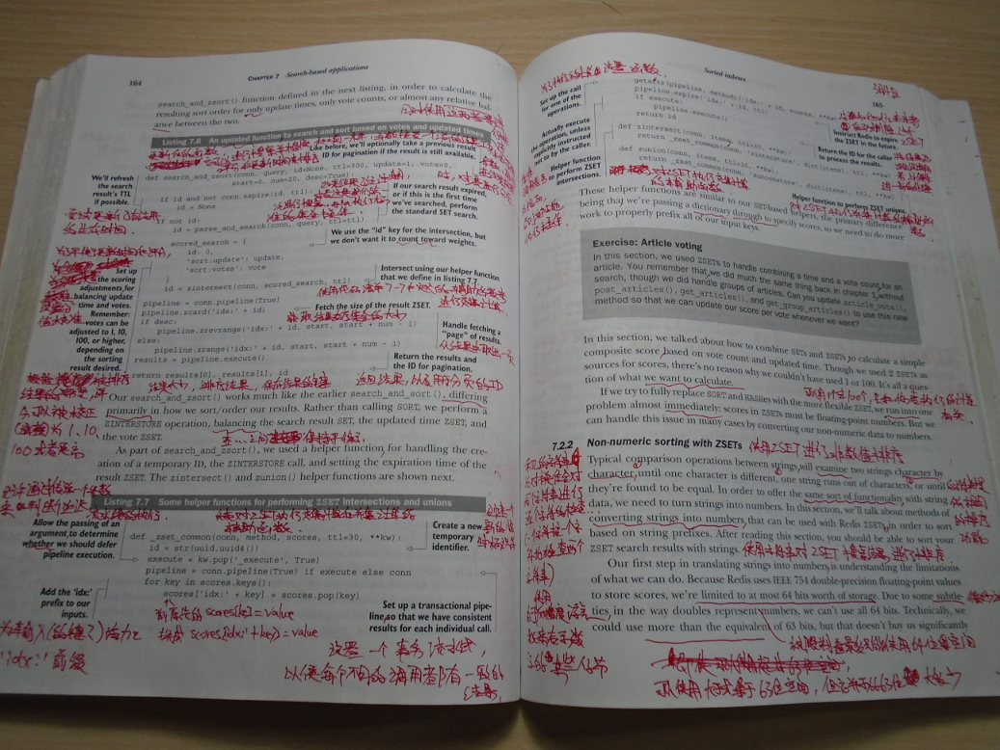
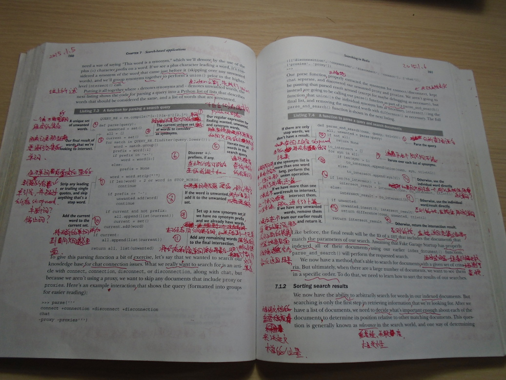
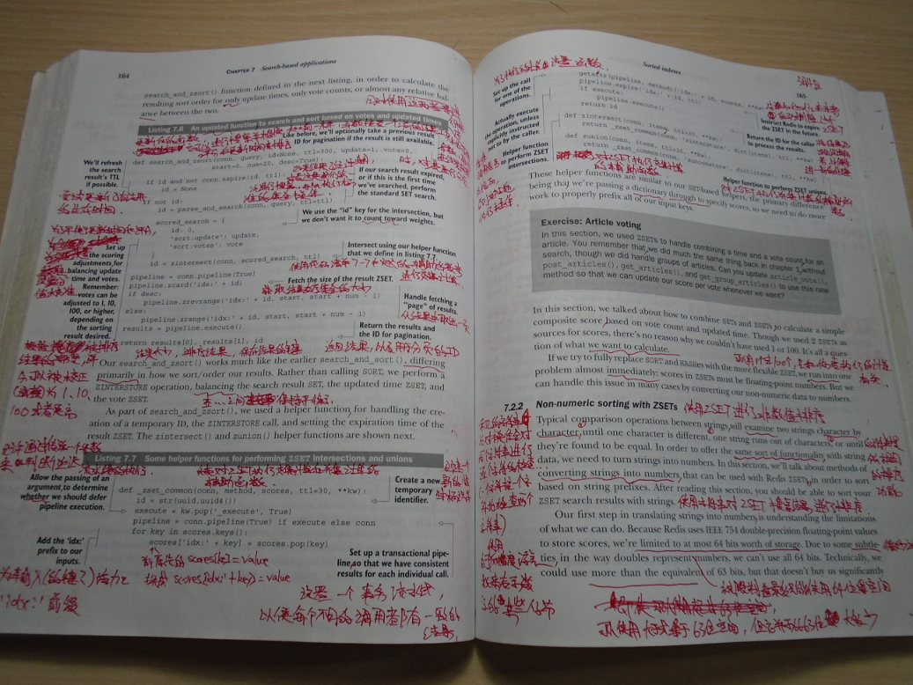
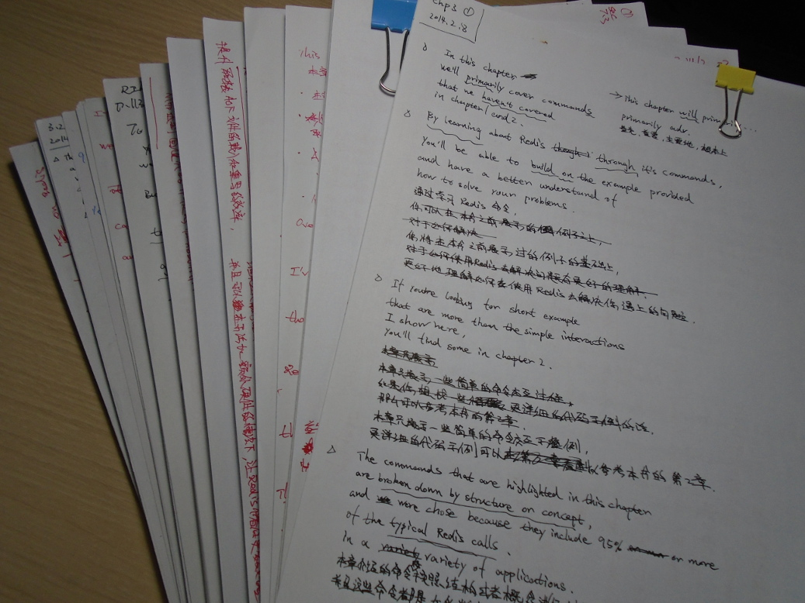
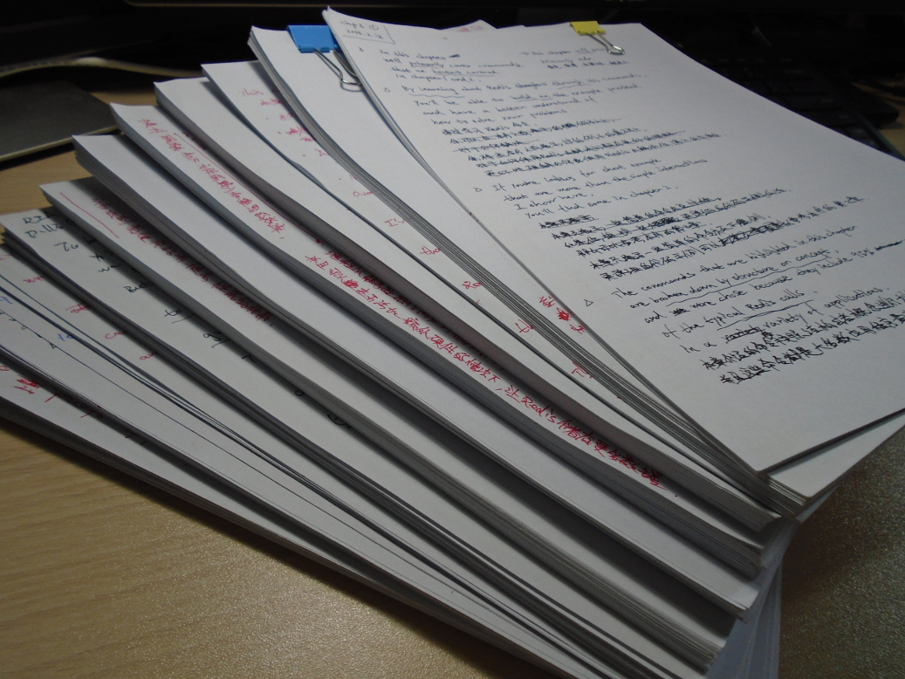
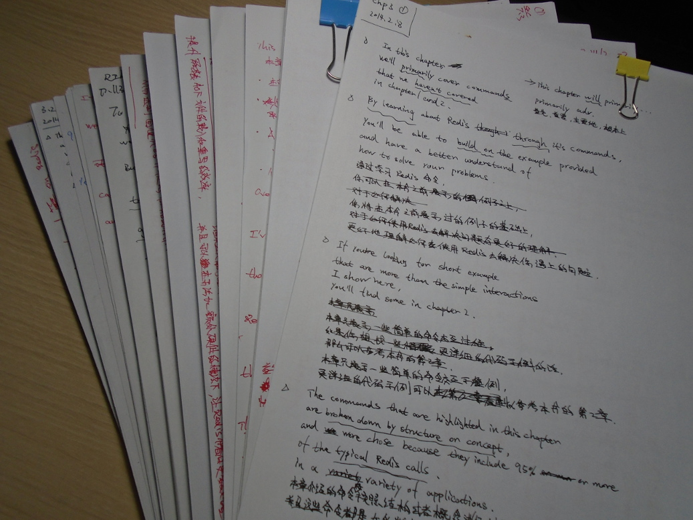
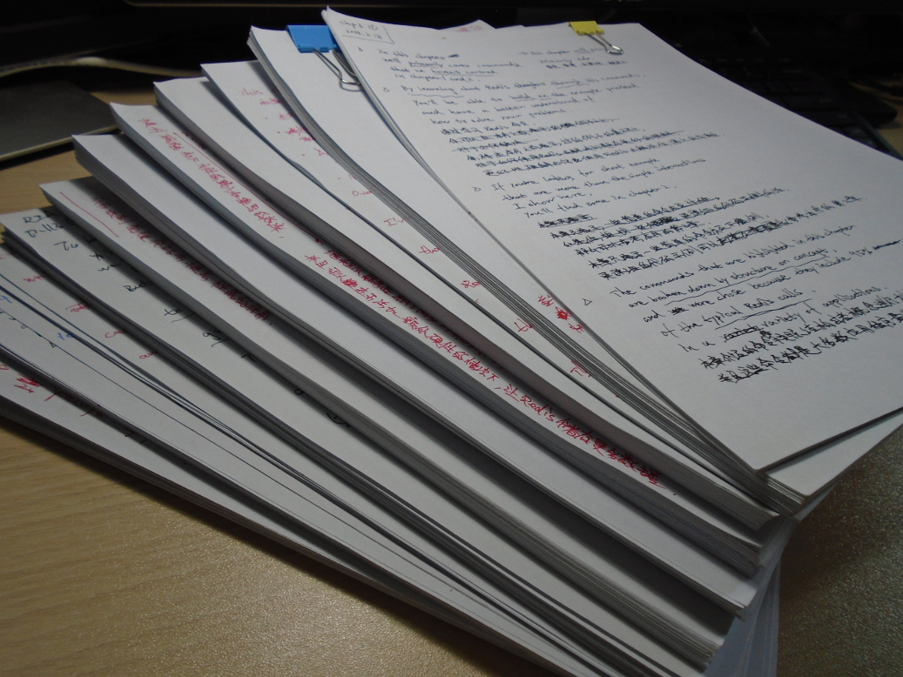

《Redis in Action》翻译记事¶
人民邮电出版社的杨海玲编辑最初是在 2013 年的 3 月份发布的一条微博上面为《Redis in Action》招募译者的：

因为我当时刚刚在网络上公开了《Redis设计与实现》的最初版本， 所以有些朋友就在微博上面留言， 向杨编辑推荐我去翻译这本书， 杨编辑也因此联系我， 问我是否有兴趣接下《Redis in Action》的翻译工作。
Manning 出版社的 In Action 系列在技术圈中非常有名气， 能够翻译这样的一本书一直是我的愿望之一， 但是当时我已经接到了机械工业出版社正式出版《Redis设计与实现》的委托， 所以虽然我对翻译《Redis in Action》非常有兴趣， 但是最后也只能遗憾地拒绝了杨编辑给出的翻译委托。
接受翻译委托¶
“一直想要正式地翻译一本书， 但是真的翻译委托来了却又没办法接下来， 而且这次还是《Redis in Action》这么有趣的书， 这真的非常可惜！” —— 在拒绝了《Redis in Action》的翻译委托之后， 这样的遗憾在我心里面一直挥之不去。
到了 2013 年 10 月， 《Redis设计与实现》的撰写工作已经进入尾声， 这时我看到杨编辑在微博上再次发布了一条 为《Redis in Action》寻找译者的微博。
“难道《Redis in Action》还没有找到合适的译者吗？！ 如果是的话这次我一定要成为这本书的译者！” 这样的想法在我脑海里面闪过， 我以最快的速度跑到杨编辑的微博下面留言， 询问相关的情况：

经过和杨编辑沟通， 我得知了《Redis in Action》这本书在我写书的半年多时间里面， 一直没有找到合适的译者这件事。 虽然我对图书出版了解不多， 但是也听说过如果引进的外文书籍在一段时间内都没有找到译者愿意翻译的话， 原出版社可能就会收回翻译版权， 导致书本的中文版无法与读者见面这种事情。 想到这一点， 虽然对于自己能否把《Redis in Action》翻译好而感到有些不安， 但我最终还是接下了这本书的翻译工作。
翻译初期¶
在完成了《Redis设计与实现》正式版的撰写工作之后， 我于 2014 年 1 月份正式开始了《Redis in Action》的翻译工作， 以下是我在翻译第 3 章时写下的一些译稿。


因为缺少对整本书的翻译经验， 所以刚开始的时候翻译工作进行得并不顺利， 从稿子上面也可以看到， 有非常多修改的地方。
在刚开始翻译的时候， 我是打算整本书都在纸上面进行翻译的， 但是在纸上翻译了几章之后， 我觉得在纸上进行修改并不是特别方便， 所以我就不再使用手工翻译， 而是转向使用电脑进行翻译。
电脑翻译阶段¶
出版社提供了一个带有所见即所得特性的 markdown 在线编辑器， 在之后的一段时间里面， 我就使用这个编辑器翻译了《Redis in Action》的第 4 章和第 5 章。 因为对之前翻译的第 1 至第 3 章的内容并不满意， 所以我又在电脑上面重新翻译了书本的前三章。
在翻译书本前五章的过程中， 我慢慢摸索出一些翻译的经验和方法， 使得翻译工作终于逐渐开始变得顺利起来了。

混合翻译阶段¶
《Redis in Action》前五章的翻译进行到了大约 2014 年的 7 月， 之后因为《Redis 设计与实现》的正式发售以及《Redis 从入门到精通》课程的录制工作， 我有几个月时间都没能把时间放到《Redis in Action》的翻译工作上面。
当我重新回到翻译工作上面来的时候， 已经是 2014 年的 12 月份了， 而摆在我面前的是一个更大的难题 —— 从第 6 章开始就是《Redis in Action》一书的重点章节， 怎样才能把这些章节译好？
我在翻译前面的章节时， 通常都是在书上面做笔记并标记重点的， 但是因为书本上面的空白位置并不多， 所以这种做法的局限性非常大。
为此， 我把第 6 章整章都用打印机打印了出来， 然后在打印纸上面做笔记并标记重点， 最后再根据这些笔记在电脑上面进行翻译。 在这种翻译方法的帮助下， 我一页页地吃透第 6 章的全部内容， 并顺利地完成了第 6 章的翻译。
以下是我在打印出的第 6 章内容上面记录的一些笔记。


手工翻译阶段¶
在经过第 6 章的手工加电脑翻译之后， 我又重新建立起了使用手工翻译的习惯， 所以从第 7 章开始， 书本后续的所有章节都是在纸上进行翻译的。
一般我会先将原文抄写到纸上（之所以选择抄写而不是直接打印出来，是因为抄写可以帮助理解原文）， 并进行断句处理， 然后在纸上进行翻译， 等到翻译好之后， 再在将译文录入到出版社提供的编辑系统上面。
以下是一些第 7 章至第 11 章的翻译手稿， 稿子的左上角标记了被翻译的是哪个章节， 而章节号码下面的画圈的数字则标记了这张手稿是相应章节的第几张稿子。


完稿¶
在经过一年半时间之后， 《Redis in Action》的中文译稿终于在 2015 年的 6 月份完成了。 刚开始接下这个翻译委托的时候， 本来协商的交稿时间是半年（截稿日为 2014 年 6 月份）， 没想到实际花的时间竟然是原计划的三倍。
在这一年多的时间里面， 除了顺利地翻译完了《Redis in Action》这本书之外， 我最大的收获就是知道了翻译一本书是多么地不容易， 而《Redis in Action》只不过是一本 300 来页的书， 回想起自己见过的中文译作里面， 四五百页甚至上千页的也不在少数， 这让我更深刻地体会到了译者是怎样的一种职业， 并对他们产生了更大的敬意。
感谢所有中文译者， 他们为帮助我们更方便地获取知识付出了巨大的努力， 我也为自己能够成为他们当中的一员而感到自豪。
 



 


